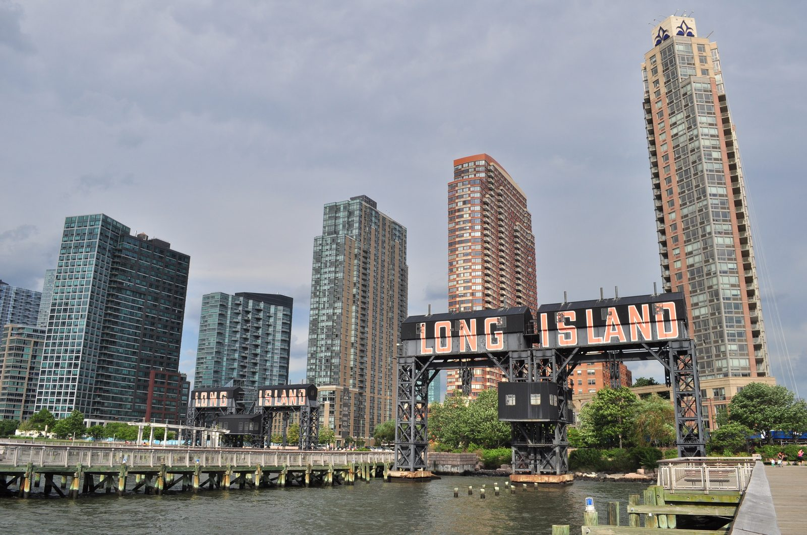
{kind=link}
A loop from the Hunters Point waterfront to Queens Plaza and back, built from LPC designation reports, court filings, and local histories rather than a guidebook. Long Island City has no book of walks the way Manhattan does, which is odd, because almost every block here has been something else: a farm, a rail yard, a bottling plant, a water-meter factory, a bread bakery, a school, a courthouse that decided the shape of two counties.
The frame is simple. LIC was industrial because Manhattan ran out of room. From the 1870s the shoreline from Hunters Point to Astoria filled with refineries, lumber yards, and factories, and by 1912 there were nearly 300 plants employing 16,000 people. Everything on this walk is either a survivor of that era, a replacement for it, or a fight over what replaces it.
Getting there
The walk starts at the Pepsi sign on the waterfront. If you live on Center Boulevard, walk out the door. Otherwise take the 7 to Vernon Blvd-Jackson Ave and walk west three blocks, or the NYC Ferry to Long Island City, which drops you inside the park. The loop ends at Queensboro Plaza (7/N/W), a two-stop ride back to Vernon Blvd, or a 20-minute walk down Jackson Avenue.
Why this walk matters
Most people in the new towers know LIC as a view of Manhattan. The neighborhood had its own downtown at Queens Plaza, its own county courthouse, its own skyscraper decades before the glass went up, and its own version of the SoHo story: artists in cheap industrial space, then developers, then lawsuits.
The theme is speed. Tribeca took two centuries to turn over. Here the same cycle ran in about forty years. Silvercup closed in 1975 and had sound stages by 1983. P.S.1 was a storage warehouse in 1975 and an art museum in 1976. 5Pointz went from factory to gallery to rubble between 1993 and 2014. The Amazon deal lasted three months. What survived did so because someone sued, landmarked it, or moved it 300 feet.
Map
Timeline: 150 years in 3 miles
Almost nothing on this route predates the Civil War. The story runs from railroad to factory to art to towers, and the last half of it happened within living memory.
The railroad's main link to Manhattan until the East River tunnels and Penn Station open in 1910.
A 500-foot inlet cut by the Anable family, who owned much of what became LIC.
Hunters Point, Astoria, Ravenswood, Dutch Kills and other villages combine. Two years later the county seat moves here from Jamaica.
The Van Alst farm is subdivided into the brownstone row later known as White Collar Row.
A water-meter factory on Davis Street and the neighborhood's school on Jackson Avenue, both built the same year.
The eastern towns break away, a fight that began over where to put the courthouse.
The bridge turns Queens Plaza into a downtown; the powerhouse electrifies the railroad for Penn Station.
Called the first skyscraper in Queens. Ruth Snyder is tried at the courthouse the same year.
The longest electric sign in New York State, atop a new bottling plant.
A Teamsters strike closes Silvercup. Alanna Heiss leases the abandoned school and opens P.S.1 with the show Rooms.
Citicorp's 673-foot tower stands alone in the warehouses for the next 20 years.
$41.5 million, ten years, one elevator that misses three floors.
The stops
1Pepsi-Cola Sign
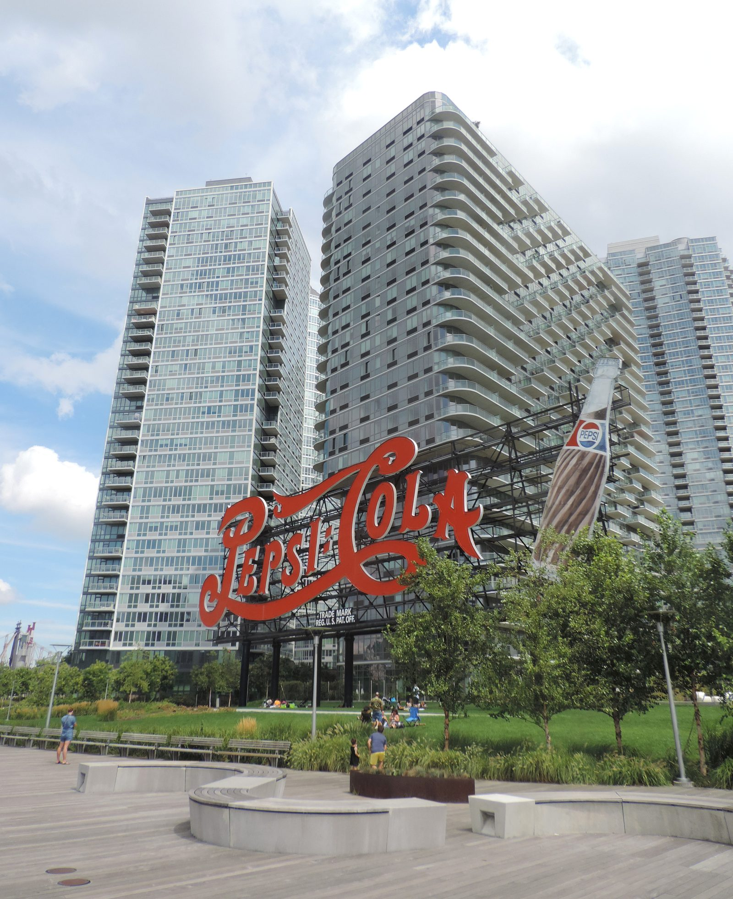
{kind=link}
Pepsi bought three lots here from Socony-Vacuum Oil in 1937 and put the sign on the bottling plant roof in August 1940. At 120 feet long it was the longest electric sign in New York State: the Pepsi-Cola script in ruby neon, a "5c" in blue, and a 50-foot bottle. The "5c" came down when the price went up in the mid-1940s. The sign was placed to be read from Manhattan and from the elevated trains, in the same era that Swingline, Breyers, Sunshine Biscuit and Chiclets all put roof signs on their LIC factories.
The December 1992 nor'easter nearly destroyed it. Artkraft Strauss, the firm behind the Times Square spectaculars, rebuilt it in 1993. Pepsi closed the plant in 1999, moved to College Point, and sold the site in 2003 on the condition that the sign stay on the waterfront. It was moved 300 feet south in 2004 while the plant was demolished, moved back in 2008, dismantled, and reassembled in its permanent spot in 2009.
The Landmarks Commission first heard the sign in 1988. Nobody had ever landmarked a solitary sign, and the Queens borough president wanted it moved out of the way of Queens West. It sat calendared for 28 years and was designated in 2016, over the objection of Pepsi, which still owns and maintains it.
2The Gantries
Before the East River tunnels opened in 1910, this was the LIRR's front door to Manhattan. The terminal went up in 1861 and the waterfront became the transfer point for goods from all of Long Island. Bridges and tunnels for freight were too expensive, so the railroads floated the trains instead: whole railcars on barges, pushed across the river by tugs.
The hard part was the landing. These two double gantries, built in 1925 to a James B. French patent, lifted transfer bridges up or down with the tide so that 100-ton cars could roll off the float and onto tracks that ran straight up to the water. The freight branch ran below street level along what is now 48th Avenue and was filled in during the early 2000s.
The park opened in 1998, designed by Thomas Balsley with the tracks left in the pavement and the gantries repainted black with LONG ISLAND in red. The southern extension opened in 2009 and 2018.
3Hunters Point Library
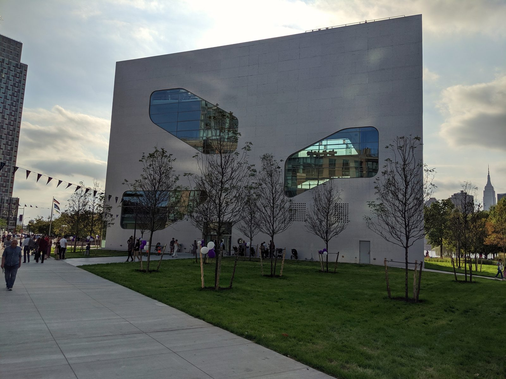
{kind=link}
Steven Holl's library was designed starting in 2010, broke ground in 2015, and opened on September 24, 2019 at $41.5 million, more than $10 million over budget. Part of the delay came from ordering European glass that got stuck behind a dock strike in Spain. Michael Kimmelman called it among the finest public buildings New York had produced this century.
Within a week the problem was obvious. The fiction section was arranged on three tiered landings along the north stair, with desks, chairs and river views, and the building's single elevator did not stop at any of them. A Long Island City resident and the Center for Independence of the Disabled filed a class action in November 2019. The library pulled the books off the tiers and left the landings as dead space.
4LIRR Powerhouse
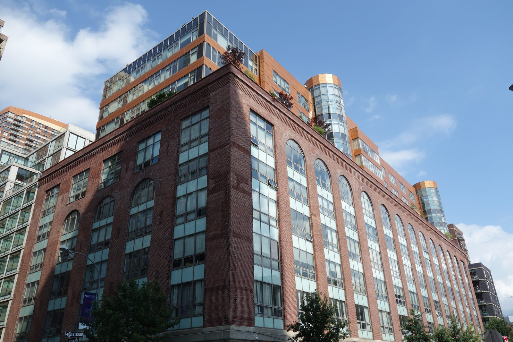
{kind=link}
The Pennsylvania Railroad built this in 1903 to 1909 to electrify the LIRR ahead of the East River tunnels and Penn Station. More than 9,500 piles went into the foundation; the plant put out 11,000-volt alternating current to substations that fed the third rail. The attribution to McKim, Mead and White, who finished Penn Station the following year, is widely repeated and occasionally disputed.
Its four smokestacks were the tallest things on this side of the river for a century. Georgia O'Keeffe painted them in her East River series from the Shelton Hotel in the 1920s. The plant closed in 1920 and sat as a chemical works and warehouse until a developer bought it in 2004. The original plan was to raze it; after community objections the shell was kept, but the stacks were declared unsafe and demolished in April 2005, replaced with short glass replicas and a four-story rooftop addition. It is now 177 condos.
545th Avenue Historic District
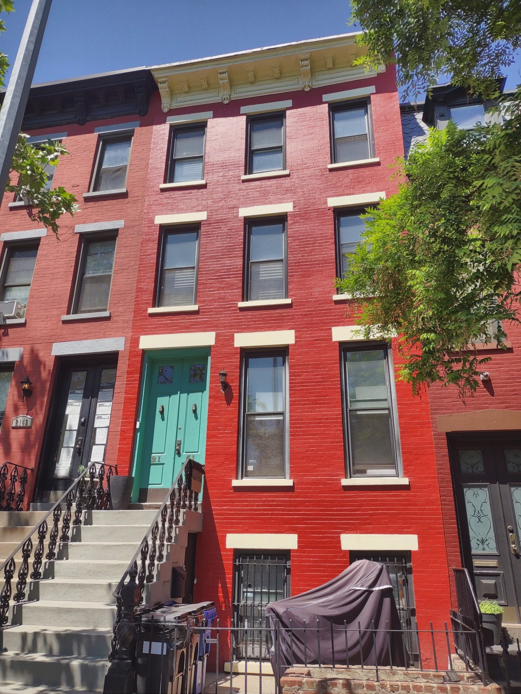
{kind=link}
The land was the Van Alst farm until it was subdivided in the 1870s. The two blocks between 21st and 23rd Streets filled with brownstone rows in Italianate, Second Empire and Neo-Grec styles, and the street was called White Collar Row. Many houses keep their original stoops and cornices. Nos. 21-12 to 21-20 and 21-21 to 21-29 are the best of it.
The most famous resident was Patrick "Battle Axe" Gleason, mayor of Long Island City in the 1880s and 90s, who earned the name by personally chopping down a fence the LIRR had built to stop pedestrians crossing 2nd Street without a ticket. When the elevated came up 23rd Street in 1916 the old families left, the houses were subdivided, and the tenants became theater people who liked the quick ride to Broadway.
Residents pushed for landmark status themselves. Seven witnesses spoke for it in 1966, none against, and it was designated in 1968, the first historic district in Queens.
6Anable Basin and the Amazon site
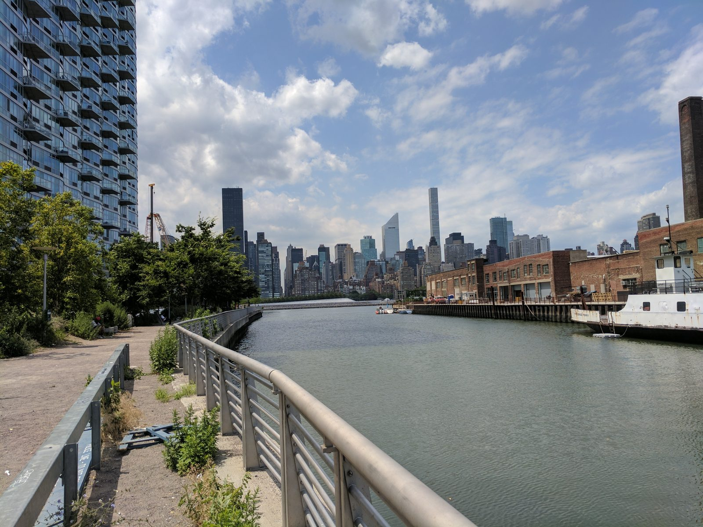
{kind=link}
The inlet was dug in 1868 by the Anable family. On its south side, 44-36 Vernon Boulevard is a 672,000-square-foot warehouse that the Department of Education uses for school buses, food service and facilities staff. In November 2018 it was announced as the center of Amazon's HQ2, a 25,000-job campus stretching over the DOE building, two city parking lots, and 12.7 acres owned by Plaxall, the plastics company that has held the basin since the 1940s.
The deal came with roughly $3 billion in state and city incentives. At a City Council hearing Amazon said it would fight unionization of its New York workforce. On February 14, 2019, three months after the announcement, the company walked away. TF Cornerstone had already won a city RFP for a 1,000-unit project on the same lots before Amazon, and lost control of them after. A developer coalition's 28-acre plan was rejected by the city in 2020. The city issued a request for ideas in 2025. Seven years on, it is still a bus depot.
7Long Island City Courthouse
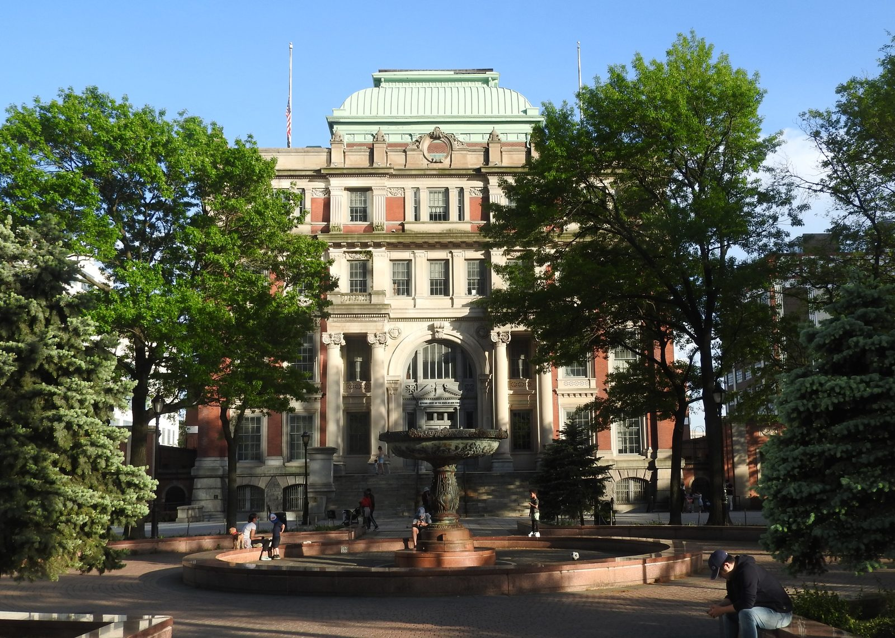
{kind=link}
In 1870 the villages of western Queens incorporated as Long Island City, and two years later the state moved the county seat here from Jamaica because the railroads all converged at Hunters Point. The eastern towns were furious. A Hempstead paper had already suggested in 1859 that the county should split rather than share a courthouse with "the crime which fills our jail." The building cost $276,000 and was occupied in 1877. In 1899, a year after consolidation into Greater New York, the eastern towns broke off as Nassau County and built their own courthouse in Mineola.
Fire gutted the building in 1904. Peter Coco, a Cooper Union graduate and the leading local architect, was told to keep the walls. He stripped the Second Empire detail, added two stories, and produced the neo-English Renaissance building here in 1908. The arch over the entrance carries both dates.
The double-height courtroom on the third floor hosted the 1927 trial of Ruth Snyder and Judd Gray, who murdered Snyder's husband for the insurance; both went to the electric chair. Willie Sutton is supposed to have said "because that's where the money is" in this building. Hitchcock shot The Wrong Man here, and DeMille shot Manslaughter.
8One Court Square
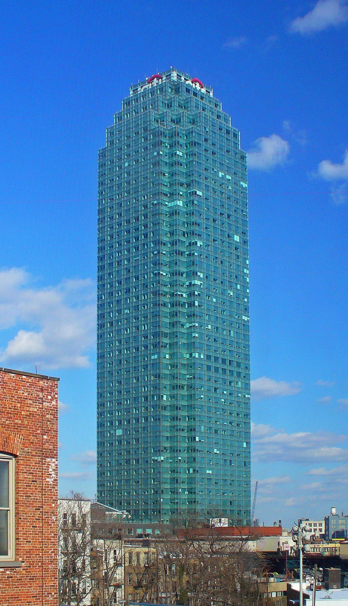
{kind=link}
Citicorp, then the largest bank in the country, announced this in 1985 to take pressure off its Manhattan headquarters, and paid for it partly by selling 30 floors of Citicorp Center. The site was a parking lot on the footprint of a demolished hospital. The 50-story, 673-foot tower opened in 1989 at $250 million with $97 million in tax breaks over 13 years; in exchange Citicorp rebuilt the Court Square station and connected it to the G.
It was the tallest building in New York State outside Manhattan for 30 years and, for most of that time, the only tall building in LIC. The Times called it "marooned amid a sea of low-lying warehouses and auto repair shops." A second tower was promised across the street and never came. Five years after opening the neighborhood was unchanged. Twenty years after opening it still was. The towers you see now nearly all date from after 2010.
95Pointz site
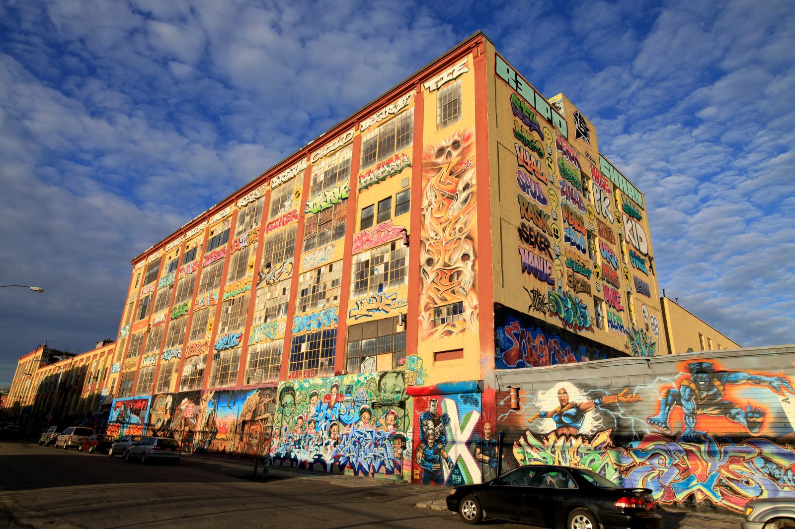
{kind=link}
The two towers here carry the name of what they replaced. The site was the Neptune Meter factory, built 1892 to make water meters when metered water was a new idea; the company left in 1972 and Jerry Wolkoff bought the buildings in 1971 with no plan. In 1993 Pat DiLillo got permission to run a legal graffiti wall, the Phun Phactory, with rules: no gang symbols, and anyone caught tagging the neighborhood lost their spot. In 2002 Jonathan Cohen, Meres One, took over as curator and turned it into 5Pointz, the largest collection of aerosol art in the country, seen from every passing 7 train. Around 11,000 murals went up in its last decade.
In 2013 Wolkoff got approvals for 1,000 apartments. The artists asked the LPC for landmark status; it was refused because the art was under 30 years old. They sued under the Visual Artists Rights Act, which protects works of "recognized stature" from destruction. On November 12 the judge denied an injunction and said a written opinion would follow. On the night of November 19, before the opinion was issued, Wolkoff had workmen whitewash almost every wall and barred the artists from recovering anything. The opinion came on November 20.
The trial in 2017 took three weeks and 29 witnesses. Judge Block found 45 works had recognized stature, that Wolkoff acted willfully and out of "pure pique and revenge," and awarded the statutory maximum of $150,000 per work. The Second Circuit affirmed in 2020; the Supreme Court declined the case that October, three months after Wolkoff died.
10MoMA PS1
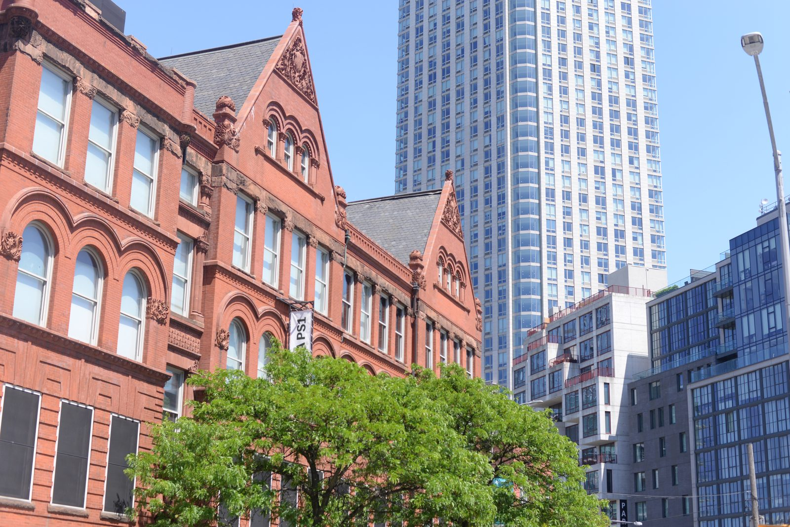
{kind=link}
Public School 1 opened in 1892, a Romanesque Revival brick school for a neighborhood that was then the center of Queens. It closed in 1963 as enrollment fell and became city storage. In 1975 the city put it up for auction, and Alanna Heiss, who had been staging shows in empty buildings across the city, took a 20-year lease with help from Gordon Matta-Clark, who had found the listing.
The opening show in June 1976 was Rooms: 78 artists let loose on the crumbling building, working in classrooms, stairwells, closets, bathrooms, the attic and the boiler room. Matta-Clark cut a hole through all three floors so you could stand in a top-floor classroom and see the basement. Richard Serra embedded steel in the floor. Artforum put it on the cover under the headline "The Apotheosis of the Crummy Space." The Matta-Clark, Serra, Artschwager and Saret pieces from that show are still installed. P.S.1 merged with MoMA in 2000; the building is still owned by the city.
11SculptureCenter
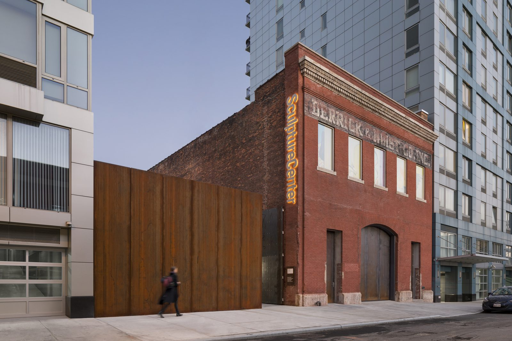
{kind=link}
A 1908 two-story brick trolley repair shop with a 40-foot ceiling and a clerestory. SculptureCenter, founded as the Clay Club in Brooklyn in 1928, sold its Upper East Side carriage house in 2001 for $4.75 million and had Maya Lin and David Hotson turn this into a European-style kunsthalle. It opened in December 2002. A 2014 addition by Andrew Berman brought it up to ADA code. Free admission.
12Silvercup Studios
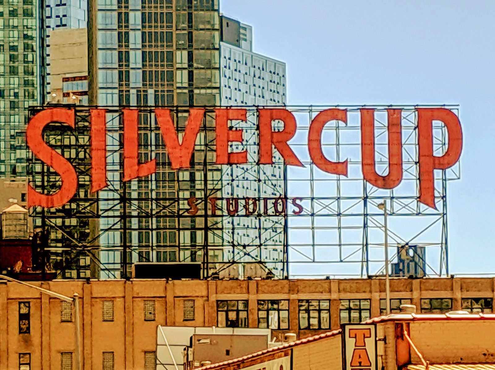
{kind=link}
Gordon Baking of Detroit built this in 1929 to 1930 with four flour silos to bake its Silvercup brand. At its peak the plant produced about a third of the bread eaten in the New York area and held the schools contract. Christopher Walken, whose family ran a bakery in Astoria, said you could smell bread coming off the bridge 24 hours a day.
It died fast. In late 1974 the Teamsters demanded a 10 percent commission on bread delivered to non-union stores; Silvercup, locked into a fixed-price city contract while grain prices doubled, offered 2. The union struck, the factory closed, the new trucks and ovens were sold for salvage, and 600 people lost their jobs. Harry Suna, who owned a sheet-metal shop on 46th Street, bought the building for $2 million in 1980 with the workers' lockers still full. His sons Alan and Stuart, both architects, opened one sound stage in 1983 and three by 1984. The Sopranos, 30 Rock and Sex and the City were shot here.
13The Clock Tower
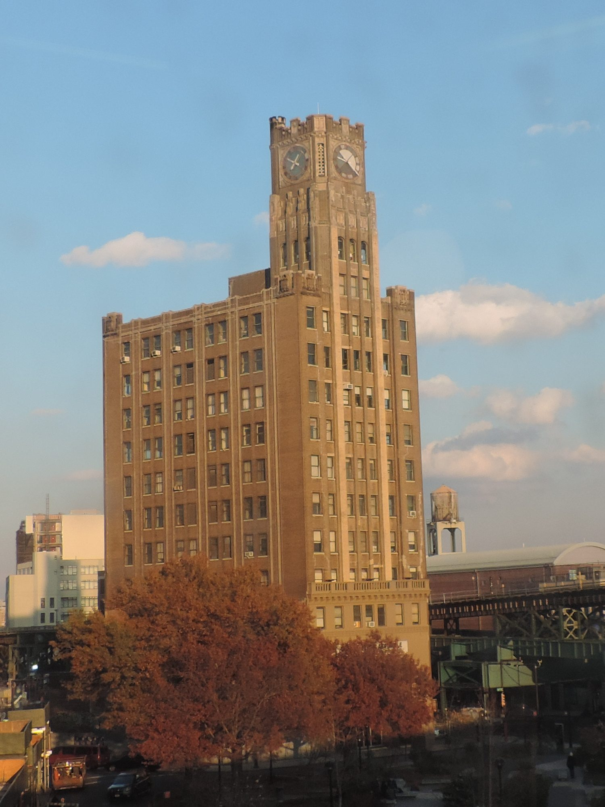
{kind=link}
Until the Triborough Bridge and the Midtown Tunnel opened in the late 1930s, everything driving into Queens came off the Queensboro Bridge into this plaza: 86,000 vehicles on a single day in 1928. The elevated trains met here from 1917. Banks followed, and Queens Plaza replaced Hunters Point as LIC's downtown.
The Bank of the Manhattan Company, founded by Aaron Burr in 1799 (the same company behind the Elma Sands well on the SoHo walk), put up this 11-story tower with a three-story clock in May 1927. Newspapers called it the first skyscraper in Queens and said the plaza would be the Times Square of Queens. It took the Chamber of Commerce prize for best business building of 1927. The following year the bank tried to build the world's tallest building at 40 Wall Street and lost to the Chrysler spire.
It was the tallest building in the borough for almost 50 years, until North Shore Towers in 1975, then Citicorp in 1989. The branch closed in 1984 and the rooftop sign came down. It was landmarked in 2015 and is now boxed in by the 67-story Sven.
After
Queensboro Plaza station is across the plaza for the 7, N and W. For food, the Court Square end has more than the plaza: Casa Enrique on 49th Avenue for Mexican, Mu Ramen on Jackson, and the LIC Flea on the waterfront on weekends in season. If you have energy left, the Noguchi Museum and Socrates Sculpture Park are a 20-minute walk north along Vernon and could be the start of the next walk.